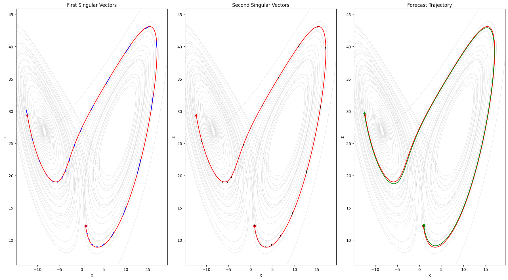
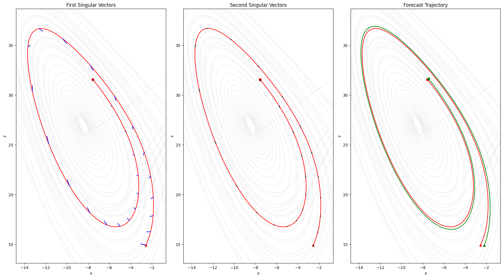

from IPython.display import ImageProject One #
Question 1
Run the model in the default configuration we have used in class. We will call this the control trajectory of the model. For a variety of points along the control trajectory, compute the propagator matrix (M) for a 1.0 time unit forecast (hereafter denoted \(t_f\) ) using the code provided. At each of these points, use the propagator matrix to predict the forecast error via the Euclidean norm for different sized isotropic initial condition errors (i.e., change the magnitude of the error in variable ic_error)). Next, compute the forecast error with the non-linear model by adding the isotropic error to the control trajectory and integrating the nonlinear model forward. How does the linear prediction of the forecast error compare to the actual error? Are there locations within the state space volume where the linear model errors disagree with the nonlinear model? What does that say about the Lorenz 63 model at these points?
We want to look at a variety of points along the true trajectory of the Lorenz model which spans 20,000 steps, and we maintain the 1.0 time unit forecast, corresponding to 500 steps. I chose to look at windows every 250 steps along the trajectory (e.g. [0-500],[250-750],...,[19500-20000]). For each window, the control trajectory is already established, a forecast error is found by stepping through numerically with an initial perturbation ic_error, and a linear prediction of the error is constructed using a tangent linear matrix. These following error calculations are represented visually below. The analysis looked at windows every 250 steps with isotropic errors between 0.0 and 1.0 inclusive (i.e. 0.0,0.1,0.2,0.3,0.4,0.5,0.6,0.7,0.8,0.9,1.0).
Image("./Images_Project_1/q1_Heatmaps.png", width=1000)These figures show the relationship between different perturbations (i.e. different values of isotropic error) and the initial step of the forecast window. The first two plots show the absolute propogated forecast error and the predicted linear model of error. A couple of observations: * Generally, the linear model of error seems to overpredict the error in a few key intervals compared to the forecasted error. They do share the intervals with the highest levels of error, but the linear model emphasizes the error much more. * The linear model misses some nuance in the forecasted error. For example, the window from step 11750 to 12250 exhibits some unexpected behavior where there is significantly higher forecast error with isotropic error of 0.2 and 0.3 compared to higher levels of isotropic error. This is likely due to the unpredictable nature of perturbations; the model will respond in different ways at different points along the trajectory. However, the linear model of error completely misses this anomaly, and it exhibits standard error increasing with isotropic error for the [11750,12250] window.
In the bottom figures, we can see the difference between the forecast error and the linear model error explicitly represented. The windows where the linear model overpredicts the error stand out as the largest differences between the two approaches. The secondary graph normalizes some of more extreme magnitudes, so we can visually see these windows more clearly. There appears to be more frequency in difference between the errors for later windows in the trajectory, but the windows of largest difference are somewhat sporadically distributed. We can draw out these specific intervals by looking at the mean difference in error for an entire window (averaging across the results for all isotropic error values). The following table presents the 10 largest mean differences in error.
Image("./Images_Project_1/q1_table_top10.png", width=1100)These windows ([initial_step, initial_step+500]) likely correspond to highly non-linear regions within the model trajectory, as the TLM tries to predict the forecast error, it might significantly overpredict or underpredict error because of the unpredictable nature of the models in these windows. We are likely not seeing a full picture of these highly non-linear windows because of the coarse step interval of 250. However, we can first look at where these steps fall in the space.
Image("./Images_Project_1/q1_lorenz3d_step250_top10_double.png", width=850)The red dots mark the initial steps for these 10 windows of largest mean error difference (darker dots have a larger mean difference). Then we can see the actual windows/trajectories these initial steps represent on the right plot. It appears that nearly of these trajectories pass through center between the lobes where the trajectory is switching between attractors. This makes sense as a highly non-linear region, and the general dispersion of these initial steps could likely be due to the nature of the system and coarseness of our 250 step intervals.
We can test this idea by simply increasing the frequency of our initial steps. If we try an interval of 25 steps between windows, we will have 800 total windows accessing many more distinct parts of the trajectories.
Image("./Images_Project_1/q1_lorenz3d_step25_double.png", width=850)These graphs show the 100 intervals with the largest difference in error. They are distributed more evenly throughout the trajectory, but we can still see that the full trajectories they describe seem to be switching between the attractors. We can check the range of the mean difference for these 100 windows below, and we see that it looks very similar to the 10 largest error windows for the 250 step intervals. This suggests that 250 steps accurately represented the non-linearity of the system.
Image("./Images_Project_1/q1_table_top100.png", width = 1100)We can finally look at the average error along the different isotropic error values. This will give us an idea of how the forecast error and non-linear behavior increases with greater perturbations. The following table and figure summarize these results. There is a relatively stable relationship between increasing the perturbation from an isotropic error and the cumlative addition to the discrepancy between forecast error and the linear model of forecast error. This is a reasonable correlation between increasing initial isotropic error and the resultant linear model performance, but it is surprising that the error does not grow more exponentially (even with larger perturbations up to 10.0). This could mean that error in initial conditions will grow exponentially, but the discrepancy between a linear model prediction and the actual propogated error might grow more linearly.
Image("./Images_Project_1/q1_table_isotropic_mean.png", width = 1100)Image('./Images_Project_1/q1_mean_perturbation.png', width = 800)Summary for Question 1
The linear models accurately approximated the forecast error for the Lorenz 63 model for the majority of the 500 step windows along the trajectory. It performed very well in most of space, including model runs with much higher initial perturbations, but there were a collection of windows along the trajectory where the discrepancy between the linear model’s prediciton and the propogated model error became very large; this discrepancy also tended to grow with increased initial condition error.
These regions and windows are documented above; they generally indicate highly non-linear sections of the trajectory because the tangent linear model has a difficult time accurately representing the behavior of these sections. When we looked at the initial steps and intervals for these sections, there was a clear correlation that the most non-linear sections tended to pass through “center” of the two lobes where the state of the Lorenz 63 model is rapidly switching between the attractors of the system.
Question 2
Repeat the above calculations from (1), but change the amount of time used to compute the propagator matrix (i.e., decrease and increase \(t_f\) with variable fcst_len). How does this change your results from above?
We can use the same process as question 1 with an added layer of iteration to vary the forecast length. For this question, an interval of 250 steps between windows will be used again, as the results in question 1 showed this spatial frequency is informative – even if it misses some granularity.
Expectations
We might expect the error difference in the models to increase consistently with the size of the forecast length because linearizing over longer intervals will both lose a lot of information to the process and increase the likelihood of encountering a highly non-linear regime in the window. For example, a forecast length of 5.0 includes 2500 steps, which is bound to encompass multiple oscillations between the strange attractors and many highly non-linear windows.
Results
Using a range of fcst lengths, [0.1, 0.2, 0.3, 0.4, 0.5, 0.75, 1.0, 2.5, 5.0, 10.0], we can look at the effect on the discrepancy in propogated forecast error and modeled linear error. Note: the following heat maps are not scaled to each other, the magnitude of the error difference varies greatly between plots. There are mutually scaled plots that follow.
Image('./Images_Project_1/q2_Heatmaps.png')Keeping in mind that the scales for each of these heatmaps are very different, these graphs give us an initial idea of how the discrepancy between the forecast and the linear model vary across the space. We can see behavior similar to the original case of a 1.0 time unit forecast length (500 steps/window) across nearly all of the lengths. The intervals of non-linearity seem to vary from case to case, and there are some interesting results when comparing similar forecast lengths.
Using a forecast length of 0.5 (250 steps/window), we see fairly consistent agreement between the forecast and the linear model, until a window between 18000 and 19000 steps where there is a massive spike in the discrepancy between the models. Even more curiously, the larger forecast length of 0.75 units (375 steps/window) exhibits significantly lower magnitudes of maximum variance between the two approaches. This is likely indiciative of the chaotic and non-linear nature of the model, by skipping an extra 125 steps in the calculation of the TLM or by starting at a different initial step, the larger forecast length of 0.75 smooths out some of the extreme non-linearity drawn out by the forecast length of 0.5. The 0.75 forecast length linear model does disagree across more of the space, more sporadically than the 0.5 forecast length linear model once again reinforcing this unpredicatable nature.
Forecast Length of 0.1 and Noise
The forecast length of 0.1 produces some amazing results. There appears to be very consistent, yet unpatterned, disagreement across nearly the entire space. The magnitude does generally increase with initial condition error, which follows expectations, but we see a very unusual blanket of disagreement across the entire trajectory. We can likely attribute this interesting behavior to the potential “noisiness” and fractal structure of the model. Even though the trajectories appear to be extremely close to one another and very consistent in their general shape, a tiny nudge along any point in the trajectory can cause very divergent trajectories. On a very small scale of linearization, this might result in the TLM shooting off in a random direction before the model returns to a slightly more “traditional” trajectory.
An additional factor might be the noisiness of the trajectory. Especially in the real world, a chaotic system is undergoing many miniscule variations and fluctuations, and shrinking down the window to linearize over eventually stops smoothing out this noise, and the noise begins to influence the linear model, dominating over the larger trend in the trajectory.
Consistent Scaling for Visualization
It can also be very helpful to look at constant scales for these plots to get an idea of how the discrepancy between models compares across forecast lengths (rather than the trajectory). The following plots do that with a logarithmic color scale.
Image('./Images_Project_1/q2_Normalize_Heatmaps.png')We can see the lower forecast lengths exhibit very little discrepancy between the forecast and linear model, but we quickly see the nature of exponential error growth in chaotic systems. The difference between the forecast and linear model begins to grow incredibly quickly, and the error grows extremely rapidly and is very signficant, especially in the models that use a length of 5.0 and 10.0. The visual results are very interesting, but we definitely need to dig into the quantitative analysis to gain a deeper understanding.
| Forecast Length | Mean Difference Between Forecast and Linear Model |
|---|---|
| 0.1 | 0.00827501 |
| 0.2 | 0.04012 |
| 0.3 | 0.175114 |
| 0.4 | 0.579343 |
| 0.5 | 0.932126 |
| 0.75 | 1.08677 |
| 1 | 2.26178 |
| 2.5 | 10.9751 |
| 5 | 155.484 |
| 10 | 18377.8 |
Here we can explicitly see this extremely rapid growth in error projection when we increase the forecast length. There seems to be a direct and signficant correlation between an increase in forecast length and an exponential-order increase in the error of the linear model projection.
Question 3
Linear time-independent propagators can have a limited usefulness for a nonlinear model. For this step, compute the tangent linear model by changing the frequency over which the propagator matrix M is computed, which in turn will change the accuracy of the tangent linear approximation, by adjusting tl_freq. Note that a value of 1 means computing the tangent linear model every timestep, a value of 10 means compute it every 10 timesteps. Repeat the process you used in (1), but where you hold the initial condition error at 0.1 units. Compare the difference between the linear and non-linear error when you compute the tangent linear model every 1, 2, 5, and 10 timesteps. How does your answer vary depending on location along the state space?
We computed the TLM over varying frequencies and time steps, to find the following results:
| TLM_Freq_Range | 1 | 2 | 5 | 10 | Mean_Difference_Step |
|---|---|---|---|---|---|
| Initial_Step | 0.012195 | 0.001714 | 0.057740 | 2.224436 | 0.574021 |
| 250 | 0.000730 | 0.003112 | 0.012237 | 0.071005 | 0.021771 |
| 500 | 0.000153 | 0.018783 | 0.084564 | 0.232829 | 0.084082 |
| 750 | 0.000323 | 0.020895 | 0.096439 | 0.268085 | 0.096435 |
| 1000 | 0.000623 | 0.022044 | 0.102818 | 0.287422 | 0.103227 |
| … | … | … | … | … | … |
| 18250 | 0.124073 | 0.181033 | 0.424563 | 1.842241 | 0.642977 |
| 18500 | 0.001102 | 0.013498 | 0.072943 | 0.257886 | 0.086357 |
| 18750 | 0.002996 | 0.019853 | 0.103808 | 0.300333 | 0.106747 |
| 19000 | 0.028476 | 0.054601 | 0.297112 | 0.597913 | 0.244526 |
| 19250 | 0.004529 | 0.018779 | 0.074558 | 0.100406 | 0.049568 |
| TLM_Freq_Range | Mean for Frequency of TLM Calculation |
|---|---|
| 1 | 0.145765 |
| 2 | 0.174193 |
| 5 | 0.319334 |
| 10 | 0.905715 |
Image('./Images_Project_1/q3_Variation in space.png')From the above tables and figures, we can find that the decrease in frequency of calculation (associated with a larger tl_freq meaning the calculation takes place after a greater number of steps). We see that the discrepancy between the forecast and the linear model increases fairly consistently with the greater number of steps used to calculate the TLM.
We see extremely similar non-linear behavior as the base case in question 1, as the TLM calculation still tends to suffer in these regimes of non-linear behavior. However, we do find some areas with unusual behavior. Speicially, we can see that the mean discrepancy for the period of 5 steps is greater than the periods of 1 and 2 steps, however, this diasgreement is spread much more evenly across the entire space. This might indicate that the period of 5 steps for the calculation manages to smooth and avoid some of the highly non-linear regions, probably by chance, although it would be very interesting to explore any patterns in periodicity and reduced discrepancy that might correspond with jumping past highly non-linear regions.
Evidently, it appears to be very advantageous to calculate the TLM as frequently as possible, although a period that is too small might result in an amplification of noise and non-linearity because the linear model is being recalculated so frequently.
Question 4
We are now going to look at the growth of initial condition errors in this model using singular vectors. At several points along the model trajectory, compute the propagator matrix for a 1.0 time unit forecast, then compute the singular vectors, which are obtained by taking the eigenvalue decomposition of M T M. Plot the evolution of the first and second singular vector in the x-z space at various points along the trajectory (you can plot the evolution of singular vectors by setting plot_sv = True, and you can switch between the first and second singular vectors by changing sing_val from 1 to 2). How does the orientation of the first and second singular vector change for different locations in the model trajectory? What is the orientation of the first and second singular vectors relative to each other for different points along the model trajectory? Explore the distribution of singular values along the state space trajectory. What locations are characterized by the largest values? What do these large values mean about the Lorenz 63 model?
The singular vectors are always orthogonal to each other, but their orientation relative to the trajectory at each point varies significantly. It does visually appear that the singular vectors maintain a very consistent orientation relative to the trajectory at each point (e.g. if the first singular vector begins orthogonal to the trajectory at an initial point, it appears to maintain that orthogonality through the trajectory window).
When once of the vectors (specifically the dominant first singular vector) aligns with the trajectory, this indicates that any perturbation along that axis will just to continue to enforce the current trajectory. When the vectors are orthogonal to the trajectory a perturbation along that direction will significantly change the trajectory.
To see how the singular values vary across the space by looking at their magnitude along different points in the trajectory.
We can see a clear dichotomy where the first singular values are always greater than or similar in magnitude to the secondary singular values. This makes sense, as the first singular values are expected to dominate the “error space” they describe. Similarly to question 1, where we found a few specific windows that exhibited high magnitudes of potential error (from the same perturbation), we see a small number of intervals that are outliers in the large magnitude of their predicted error.
It might be informative to compare the largest intervals of error between the SVD analysis and the TLM analysis from question 1. The table below draws out the 10 intervals with the largest magnitude of predicted error from the SVD method, the 10 intervals with the largest discrepancy in error, and the ten intervals with the largest propogated error (actually stepping the isorptoic error through the Lorenz model).
Initial Step for a 500 step Interval
| Rank | Singular Value | TLM Prediciton | Propagated Forecast Error |
|---|---|---|---|
| 1 | 7250 | 7250 | 7250 |
| 2 | 8500 | 11750 | 11750 |
| 3 | 11750 | 16500 | 16500 |
| 4 | 13250 | 14500 | 15500 |
| 5 | 14250 | 16750 | 16750 |
| 6 | 15250 | 15500 | 14500 |
| 7 | 15500 | 14250 | 7500 |
| 8 | 16500 | 18000 | 18000 |
| 9 | 17500 | 7500 | 14250 |
| 10 | 18000 | 11000 | 15250 |
We would expect these ten regions to describe the most non-linear and volatile windows of the Lorenz model, and we can see some interesting shared results between them. * The Tangent Linear Model prediction shares 9 of the 10 top intervals with the true propogated error, with the first three intervals also sharing the same rank/ordering. * The Singular Value Decomposition analysis shares many of the same results, including the largest magnitude of error from the interval 7250 steps to 7750 steps. They share 7 of the 10 total intervals.
It is very interesting and helpful that the SVD analysis can tell us information about these highly non-linear regions, but their chief purpose is to describe the greatest possible error growth and final space that the error might occupy as we step the singular vectors through the system.
The graphs for all 80 windows (250 steps intervals for 500 step windows) are shown below, with the first singular vectors in the first graph, the sceond singular vectors in the second graph, and the forecast trajectory (exhibiting a slight perturbation) in the last graph. One of the most interesting visual results that I would like to explor more, is how the actual orientation and the result of their superposition might relate to the final relative position of the forecast trajectory. It appears that a superposition of the singular vectors might tell us with some degree of accuracy where a model with isotropic error might end up after a certain window. This is an amazing result because it means you could use a single set of propogated singular vectors to approximate the final state of a variety of initial perturbations. This result also makes sense mathematically, as an isotropic error (equal in all directions) would grow the most along the singular vectors, resulting in a final error that can be very well approximated by these vectors. Another interesting challenge might be to adapt and calibrate singular vector results to work with non-uniform/non-isotropic error.
Appendix: All Singular Vectors
plt.rcParams["figure.figsize"] = [18.0, 10]
sing_val = 1
for index, M in enumerate(TLM_storage):
(xtrue, ytrue, ztrue), (xfcst, yfcst, zfcst) = xyztruths[index], xyzfcsts[index]
u, s, vt = np.linalg.svd(M, full_matrices=True)
ic_sing = np.array(vt[sing_val - 1, :])
ic_sing[:] = ic_sing[:] / np.sqrt(np.sum(ic_sing[:] ** 2)) * np.sqrt(np.sum(ic_error[:] ** 2)) ## Normalize singular vectors
ic_sing_2 = np.array(vt[sing_val, :])
ic_sing_2[:] = ic_sing_2[:] / np.sqrt(np.sum(ic_sing_2[:] ** 2)) * np.sqrt(np.sum(ic_error[:] ** 2)) ## Normalize singular vectors
xsing = np.empty(fcst_steps + 1)
ysing = np.empty(fcst_steps + 1)
zsing = np.empty(fcst_steps + 1)
xsing[0], ysing[0], zsing[0] = (xtrue[0] + ic_sing[0], ytrue[0] + ic_sing[1], ztrue[0] + ic_sing[2])
xsing_2 = np.empty(fcst_steps + 1)
ysing_2 = np.empty(fcst_steps + 1)
zsing_2 = np.empty(fcst_steps + 1)
xsing_2[0], ysing_2[0], zsing_2[0] = (xtrue[0] + ic_sing_2[0], ytrue[0] + ic_sing_2[1], ztrue[0] + ic_sing_2[2])
for i in range(fcst_steps):
x_dot, y_dot, z_dot = lorenz(xsing[i], ysing[i], zsing[i])
xsing[i + 1] = xsing[i] + (x_dot * dt)
ysing[i + 1] = ysing[i] + (y_dot * dt)
zsing[i + 1] = zsing[i] + (z_dot * dt)
x_dot, y_dot, z_dot = lorenz(xsing_2[i], ysing_2[i], zsing_2[i])
xsing_2[i + 1] = xsing_2[i] + (x_dot * dt)
ysing_2[i + 1] = ysing_2[i] + (y_dot * dt)
zsing_2[i + 1] = zsing_2[i] + (z_dot * dt)
print(f"INITIAL STEP: {initial_steps[index]}")
print(f"First and Second Singular Values: ({s[sing_val - 1]}, {s[sing_val]}")
print("Error from forecast with First SV initial condition error: ",
euclid_norm(xsing[-1], ysing[-1], zsing[-1], xtrue[-1], ytrue[-1], ztrue[-1]))
print("Error from forecast with Second SV initial condition error: ",
euclid_norm(xsing_2[-1], ysing_2[-1], zsing_2[-1], xtrue[-1], ytrue[-1], ztrue[-1]))
print("Predicted Error from TLM: ", TLM_error[index])
print("Propogated Forecast Error: ", fcst_error[index])
fig, (ax1,ax2,ax3) = plt.subplots(1,3)
## Establish base trajectory
ax1.plot(xtraj, ztraj, lw=0.5, color='lightgray')
ax1.plot(xtrue, ztrue, '-', color='red')
ax1.plot(xtrue[0], ztrue[0], 'o', color='red')
ax1.plot(xtrue[-1], ztrue[-1], '^', color='red')
ax2.plot(xtraj, ztraj, lw=0.5, color='lightgray')
ax2.plot(xtrue, ztrue, '-', color='red')
ax2.plot(xtrue[0], ztrue[0], 'o', color='red')
ax2.plot(xtrue[-1], ztrue[-1], '^', color='red')
ax3.plot(xtraj, ztraj, lw=0.5, color='lightgray')
ax3.plot(xtrue, ztrue, '-', color='red')
ax3.plot(xtrue[0], ztrue[0], 'o', color='red')
ax3.plot(xtrue[-1], ztrue[-1], '^', color='red')
#plot_nlfcst=True
if (plot_nlfcst):
ax1.plot(xfcst, zfcst, '-', color='green')
ax1.plot(xfcst[0], zfcst[0], 'o', color='green')
ax1.plot(xfcst[-1], zfcst[-1], '^', color='green')
ax2.plot(xfcst, zfcst, '-', color='green')
ax2.plot(xfcst[0], zfcst[0], 'o', color='green')
ax2.plot(xfcst[-1], zfcst[-1], '^', color='green')
## Plot Forecast Third Plot
ax3.plot(xfcst, zfcst, '-', color='green')
ax3.plot(xfcst[0], zfcst[0], 'o', color='green')
ax3.plot(xfcst[-1], zfcst[-1], '^', color='green')
xmin = np.min([np.min(xtrue), np.min(xfcst)])
xmax = np.max([np.max(xtrue), np.max(xfcst)])
zmin = np.min([np.min(ztrue), np.min(zfcst)])
zmax = np.max([np.max(ztrue), np.max(zfcst)])
if (plot_sv):
ax1.plot([xtrue[0], xsing[0]], [ztrue[0], zsing[0]], '-', color='blue')
ax1.plot([xtrue[-1], xsing[-1]], [ztrue[-1], zsing[-1]], '-', color='blue')
for i in range(0, len(xsing), sv_plot_freq):
ax1.plot([xtrue[i], xsing[i]], [ztrue[i], zsing[i]], '-', color='blue')
ax2.plot([xtrue[0], xsing_2[0]], [ztrue[0], zsing_2[0]], '-', color='black')
ax2.plot([xtrue[-1], xsing_2[-1]], [ztrue[-1], zsing_2[-1]], '-', color='black')
for i in range(0, len(xsing), sv_plot_freq):
ax2.plot([xtrue[i], xsing_2[i]], [ztrue[i], zsing_2[i]], '-', color='black')
ax1.axis([xmin - (xmax - xmin) * 0.08, xmax + (xmax - xmin) * 0.08, zmin - (zmax - zmin) * 0.08,
zmax + (zmax - zmin) * 0.08])
ax1.set_xlabel('x')
ax1.set_ylabel('z')
ax1.set_title(f"First Singular Vectors")
ax2.axis([xmin - (xmax - xmin) * 0.08, xmax + (xmax - xmin) * 0.08, zmin - (zmax - zmin) * 0.08,
zmax + (zmax - zmin) * 0.08])
ax2.set_xlabel('x')
ax2.set_ylabel('z')
ax2.set_title(f"Second Singular Vectors")
ax3.axis([xmin - (xmax - xmin) * 0.08, xmax + (xmax - xmin) * 0.08, zmin - (zmax - zmin) * 0.08,
zmax + (zmax - zmin) * 0.08])
ax3.set_xlabel('x')
ax3.set_ylabel('z')
ax3.set_title(f"Forecast Trajectory")
#plt.savefig('lorenz_xz.png', format='png', dpi=150, bbox_inches='tight')
plt.show()INITIAL STEP: 0
First and Second Singular Values: (1.228448594501129, 0.4513373125491462
Error from forecast with First SV initial condition error: 0.19141132902862804
Error from forecast with Second SV initial condition error: 0.07863218015959082
Predicted Error from TLM: 0.2009193293103853
Propogated Forecast Error: 0.18872417060474964
INITIAL STEP: 250
First and Second Singular Values: (1.1394503929734268, 0.9941714980010311
Error from forecast with First SV initial condition error: 0.1952090074899054
Error from forecast with Second SV initial condition error: 0.17261387607015388
Predicted Error from TLM: 0.0048714295720515095
Propogated Forecast Error: 0.004141219987058146INITIAL STEP: 500
First and Second Singular Values: (1.424139752324881, 0.995086732061398
Error from forecast with First SV initial condition error: 0.24695559804987424
Error from forecast with Second SV initial condition error: 0.17236267977680328
Predicted Error from TLM: 0.18383521634116032
Propogated Forecast Error: 0.18368264283319208INITIAL STEP: 750
First and Second Singular Values: (1.448990527988891, 0.9810145948053746
Error from forecast with First SV initial condition error: 0.25176667007541637
Error from forecast with Second SV initial condition error: 0.16960956885570896
Predicted Error from TLM: 0.20159958845084266
Propogated Forecast Error: 0.20192274260383636INITIAL STEP: 1000
First and Second Singular Values: (1.4849703940755705, 1.0373268437037995
Error from forecast with First SV initial condition error: 0.2583218336033291
Error from forecast with Second SV initial condition error: 0.17949634877880935
Predicted Error from TLM: 0.2139203878074159
Propogated Forecast Error: 0.21454378450062808INITIAL STEP: 1250
First and Second Singular Values: (1.432192023727519, 1.1484609190576092
Error from forecast with First SV initial condition error: 0.24896354352703345
Error from forecast with Second SV initial condition error: 0.19923901853209283
Predicted Error from TLM: 0.20777775375881197
Propogated Forecast Error: 0.20839147151205964
INITIAL STEP: 1500
First and Second Singular Values: (1.342170250121057, 1.1696944017917177
Error from forecast with First SV initial condition error: 0.2320121449072954
Error from forecast with Second SV initial condition error: 0.20360533553894575
Predicted Error from TLM: 0.17429048491620314
Propogated Forecast Error: 0.174348634935737INITIAL STEP: 1750
First and Second Singular Values: (1.4311106346016833, 0.9784700677071371
Error from forecast with First SV initial condition error: 0.247890887649622
Error from forecast with Second SV initial condition error: 0.1695489710477361
Predicted Error from TLM: 0.17047381134290004
Propogated Forecast Error: 0.17000400133725613INITIAL STEP: 2000
First and Second Singular Values: (1.4478075379473676, 0.936967182483607
Error from forecast with First SV initial condition error: 0.2515857735274089
Error from forecast with Second SV initial condition error: 0.1617753720478683
Predicted Error from TLM: 0.19990546969422926
Propogated Forecast Error: 0.2002223800216269INITIAL STEP: 2250
First and Second Singular Values: (1.5086556862321694, 1.0071442976447544
Error from forecast with First SV initial condition error: 0.26272860871352854
Error from forecast with Second SV initial condition error: 0.17402529948364467
Predicted Error from TLM: 0.2204506597155609
Propogated Forecast Error: 0.22131693059456403INITIAL STEP: 2500
First and Second Singular Values: (1.5428222725618967, 1.1331808895134858
Error from forecast with First SV initial condition error: 0.2689480815740679
Error from forecast with Second SV initial condition error: 0.19639229686388016
Predicted Error from TLM: 0.23039350027001174
Propogated Forecast Error: 0.23155954971205375INITIAL STEP: 2750
First and Second Singular Values: (1.4016668588441896, 1.2097050884982727
Error from forecast with First SV initial condition error: 0.23915784063889176
Error from forecast with Second SV initial condition error: 0.20950357334517827
Predicted Error from TLM: 0.18405883283762142
Propogated Forecast Error: 0.18529560409800425INITIAL STEP: 3000
First and Second Singular Values: (1.4875984404652989, 0.9401708964628126
Error from forecast with First SV initial condition error: 0.2571946720204518
Error from forecast with Second SV initial condition error: 0.16286363618266944
Predicted Error from TLM: 0.14388742630012902
Propogated Forecast Error: 0.14295811334720274INITIAL STEP: 3250
First and Second Singular Values: (1.45770296893673, 0.8719289528138046
Error from forecast with First SV initial condition error: 0.253380143044041
Error from forecast with Second SV initial condition error: 0.15023409953925224
Predicted Error from TLM: 0.19851642512016546
Propogated Forecast Error: 0.19884065708554938INITIAL STEP: 3500
First and Second Singular Values: (1.4980553003465218, 0.9966111982649489
Error from forecast with First SV initial condition error: 0.26125404995161383
Error from forecast with Second SV initial condition error: 0.17187266033975965
Predicted Error from TLM: 0.2225369193130687
Propogated Forecast Error: 0.22374614986909958INITIAL STEP: 3750
First and Second Singular Values: (1.7889975809893677, 1.092029301586354
Error from forecast with First SV initial condition error: 0.3130887950058776
Error from forecast with Second SV initial condition error: 0.18915331535892727
Predicted Error from TLM: 0.27296148337732834
Propogated Forecast Error: 0.2751542767876681INITIAL STEP: 4000
First and Second Singular Values: (1.9084572682586123, 1.0179457704552273
Error from forecast with First SV initial condition error: 0.32249778209826496
Error from forecast with Second SV initial condition error: 0.17591477563090877
Predicted Error from TLM: 0.2551009329937229
Propogated Forecast Error: 0.2605178347250656INITIAL STEP: 4250
First and Second Singular Values: (1.7370714376335255, 0.7995003830439859
Error from forecast with First SV initial condition error: 0.2999614623762776
Error from forecast with Second SV initial condition error: 0.13808735476408218
Predicted Error from TLM: 0.10330747346228375
Propogated Forecast Error: 0.10277928189065792INITIAL STEP: 4500
First and Second Singular Values: (1.482515461926413, 0.7893204971216957
Error from forecast with First SV initial condition error: 0.2579583053288852
Error from forecast with Second SV initial condition error: 0.1354986983472167
Predicted Error from TLM: 0.20549324159726512
Propogated Forecast Error: 0.2060122314499347INITIAL STEP: 4750
First and Second Singular Values: (1.5244281585382646, 1.0614303288199824
Error from forecast with First SV initial condition error: 0.26651438370036706
Error from forecast with Second SV initial condition error: 0.1830050836295799
Predicted Error from TLM: 0.22092364497150177
Propogated Forecast Error: 0.2229222613169632INITIAL STEP: 5000
First and Second Singular Values: (2.714356419158488, 0.9845519399310263
Error from forecast with First SV initial condition error: 0.4803253229375657
Error from forecast with Second SV initial condition error: 0.17131556145091117
Predicted Error from TLM: 0.42001829091622717
Propogated Forecast Error: 0.4267304195814149INITIAL STEP: 5250
First and Second Singular Values: (3.75392471172085, 0.5960530238556376
Error from forecast with First SV initial condition error: 0.6691169213074696
Error from forecast with Second SV initial condition error: 0.10304917219200839
Predicted Error from TLM: 0.5413597763445281
Propogated Forecast Error: 0.5567376283136283INITIAL STEP: 5500
First and Second Singular Values: (2.003898865289222, 0.5780326795640853
Error from forecast with First SV initial condition error: 0.3492675632305015
Error from forecast with Second SV initial condition error: 0.09952149360965397
Predicted Error from TLM: 0.08502636543284155
Propogated Forecast Error: 0.0827385284911872INITIAL STEP: 5750
First and Second Singular Values: (1.6731624788306139, 0.8336981628458902
Error from forecast with First SV initial condition error: 0.2958314814485263
Error from forecast with Second SV initial condition error: 0.14616085239877863
Predicted Error from TLM: 0.20846691123452446
Propogated Forecast Error: 0.2051941650237077INITIAL STEP: 6000
First and Second Singular Values: (6.1876838514727845, 0.7743514439066163
Error from forecast with First SV initial condition error: 1.1121372291639198
Error from forecast with Second SV initial condition error: 0.13524973346238336
Predicted Error from TLM: 0.722401065348075
Propogated Forecast Error: 0.739304321928733INITIAL STEP: 6250
First and Second Singular Values: (7.5507408969611545, 0.42819895398258523
Error from forecast with First SV initial condition error: 1.3411991379962596
Error from forecast with Second SV initial condition error: 0.07397344397663684
Predicted Error from TLM: 1.0829958915638969
Propogated Forecast Error: 1.0814876006955487INITIAL STEP: 6500
First and Second Singular Values: (6.753819559856853, 0.25258771525113854
Error from forecast with First SV initial condition error: 1.2922422210064317
Error from forecast with Second SV initial condition error: 0.04453315159509208
Predicted Error from TLM: 0.40429120014843695
Propogated Forecast Error: 0.38213745258215376INITIAL STEP: 6750
First and Second Singular Values: (6.774815816175093, 0.8390327742537173
Error from forecast with First SV initial condition error: 1.1279623204711637
Error from forecast with Second SV initial condition error: 0.14321109819196706
Predicted Error from TLM: 0.7007396748122315
Propogated Forecast Error: 0.6919184318630982INITIAL STEP: 7000
First and Second Singular Values: (6.898996519772768, 0.5143525167961486
Error from forecast with First SV initial condition error: 1.1719770635328375
Error from forecast with Second SV initial condition error: 0.08895217228370335
Predicted Error from TLM: 0.9860921922609412
Propogated Forecast Error: 1.0192621575765906INITIAL STEP: 7250
First and Second Singular Values: (92.73753952986377, 0.1350298866859837
Error from forecast with First SV initial condition error: 25.187888764734115
Error from forecast with Second SV initial condition error: 0.07594989098571663
Predicted Error from TLM: 15.692848621470802
Propogated Forecast Error: 10.520789540603468INITIAL STEP: 7500
First and Second Singular Values: (5.993147689567335, 0.783614725833048
Error from forecast with First SV initial condition error: 1.0992025429772532
Error from forecast with Second SV initial condition error: 0.1335155713034691
Predicted Error from TLM: 0.9492524617316714
Propogated Forecast Error: 0.9873782411772741INITIAL STEP: 7750
First and Second Singular Values: (2.670002277610177, 0.3933319882647412
Error from forecast with First SV initial condition error: 0.4694627186426081
Error from forecast with Second SV initial condition error: 0.06796860534276068
Predicted Error from TLM: 0.15741289376089881
Propogated Forecast Error: 0.15716292724183048
INITIAL STEP: 8000
First and Second Singular Values: (1.7536464638481108, 0.6400681033009227
Error from forecast with First SV initial condition error: 0.30933282987728067
Error from forecast with Second SV initial condition error: 0.11125692443137335
Predicted Error from TLM: 0.14956718793056162
Propogated Forecast Error: 0.15157101319794172INITIAL STEP: 8250
First and Second Singular Values: (4.188283114227821, 0.9086644194989427
Error from forecast with First SV initial condition error: 0.7019663830130588
Error from forecast with Second SV initial condition error: 0.15717934448392099
Predicted Error from TLM: 0.7237968686069679
Propogated Forecast Error: 0.7000092330077166INITIAL STEP: 8500
First and Second Singular Values: (10.499587298009379, 0.4230211615415259
Error from forecast with First SV initial condition error: 1.8332628439147662
Error from forecast with Second SV initial condition error: 0.07334014032680009
Predicted Error from TLM: 1.3538853174498
Propogated Forecast Error: 1.3632685808360436INITIAL STEP: 8750
First and Second Singular Values: (4.696557453617434, 0.3218323600045132
Error from forecast with First SV initial condition error: 0.8678392612293081
Error from forecast with Second SV initial condition error: 0.05614988963563848
Predicted Error from TLM: 0.5394538479347564
Propogated Forecast Error: 0.5631453689510932INITIAL STEP: 9000
First and Second Singular Values: (8.871850408812492, 0.5209800266580279
Error from forecast with First SV initial condition error: 1.6146953099941184
Error from forecast with Second SV initial condition error: 0.09140838705330526
Predicted Error from TLM: 0.5835600277250649
Propogated Forecast Error: 0.6063905068127381INITIAL STEP: 9250
First and Second Singular Values: (7.983191840634525, 0.6136484094384359
Error from forecast with First SV initial condition error: 1.4712548730906214
Error from forecast with Second SV initial condition error: 0.10617128452688214
Predicted Error from TLM: 0.8936861137599398
Propogated Forecast Error: 0.870392417363336INITIAL STEP: 9500
First and Second Singular Values: (9.685721604107563, 0.2134296894551712
Error from forecast with First SV initial condition error: 1.4552743132683277
Error from forecast with Second SV initial condition error: 0.037159927412499044
Predicted Error from TLM: 0.37903406413013907
Propogated Forecast Error: 0.3682499545785544INITIAL STEP: 9750
First and Second Singular Values: (3.8910508850417713, 0.9854048246444225
Error from forecast with First SV initial condition error: 0.6600386306484203
Error from forecast with Second SV initial condition error: 0.16857762201797813
Predicted Error from TLM: 0.23926428990184226
Propogated Forecast Error: 0.2490002147782418INITIAL STEP: 10000
First and Second Singular Values: (8.987734136184793, 0.4209924488021833
Error from forecast with First SV initial condition error: 1.5902056990539168
Error from forecast with Second SV initial condition error: 0.07285795158696082
Predicted Error from TLM: 1.0897414890703894
Propogated Forecast Error: 1.0911795456939313INITIAL STEP: 10250
First and Second Singular Values: (4.732090593204953, 0.30334479831884176
Error from forecast with First SV initial condition error: 0.8761654113989985
Error from forecast with Second SV initial condition error: 0.052964405643645754
Predicted Error from TLM: 0.05994703355945461
Propogated Forecast Error: 0.06522408304579431INITIAL STEP: 10500
First and Second Singular Values: (9.711747596461086, 0.5817934732657293
Error from forecast with First SV initial condition error: 1.5876343237598336
Error from forecast with Second SV initial condition error: 0.0996479945710984
Predicted Error from TLM: 1.0809796001288265
Propogated Forecast Error: 1.0831413114647723INITIAL STEP: 10750
First and Second Singular Values: (6.825409217775385, 0.6408120380092543
Error from forecast with First SV initial condition error: 1.1379334630178615
Error from forecast with Second SV initial condition error: 0.11093695750647689
Predicted Error from TLM: 1.0372116087213339
Propogated Forecast Error: 1.090257656957786INITIAL STEP: 11000
First and Second Singular Values: (7.8283782415228975, 0.21170723583937306
Error from forecast with First SV initial condition error: 1.5207449353159537
Error from forecast with Second SV initial condition error: 0.0369983980363457
Predicted Error from TLM: 1.323949431062534
Propogated Forecast Error: 1.1813474920238063INITIAL STEP: 11250
First and Second Singular Values: (5.348084700626555, 0.9205852250298434
Error from forecast with First SV initial condition error: 0.8970925390938584
Error from forecast with Second SV initial condition error: 0.15729464403211652
Predicted Error from TLM: 0.648276971987902
Propogated Forecast Error: 0.6434406504468259INITIAL STEP: 11500
First and Second Singular Values: (7.862564289388624, 0.4641566126926464
Error from forecast with First SV initial condition error: 1.3476054139191385
Error from forecast with Second SV initial condition error: 0.08004087993216243
Predicted Error from TLM: 1.1107840732752652
Propogated Forecast Error: 1.1401294860019202INITIAL STEP: 11750
First and Second Singular Values: (44.72881223707939, 0.15768619443008586
Error from forecast with First SV initial condition error: 5.625668244036727
Error from forecast with Second SV initial condition error: 0.05112607738055001
Predicted Error from TLM: 7.711564913333264
Propogated Forecast Error: 11.388319015496068INITIAL STEP: 12000
First and Second Singular Values: (4.357448335617873, 1.0088485073710436
Error from forecast with First SV initial condition error: 0.7335748637591382
Error from forecast with Second SV initial condition error: 0.17857211327690664
Predicted Error from TLM: 0.44318085826368575
Propogated Forecast Error: 0.42212156737037293
INITIAL STEP: 12250
First and Second Singular Values: (4.104924194189864, 0.41772374390133693
Error from forecast with First SV initial condition error: 0.7145221263869772
Error from forecast with Second SV initial condition error: 0.07210576884075597
Predicted Error from TLM: 0.16010643170412056
Propogated Forecast Error: 0.15809212436162245INITIAL STEP: 12500
First and Second Singular Values: (2.1310721370186876, 0.4974492733229061
Error from forecast with First SV initial condition error: 0.3634080572052789
Error from forecast with Second SV initial condition error: 0.08575145469557102
Predicted Error from TLM: 0.26008459130361916
Propogated Forecast Error: 0.25623156619576504
INITIAL STEP: 12750
First and Second Singular Values: (7.197807835115761, 0.7254978103527995
Error from forecast with First SV initial condition error: 1.3094771431050143
Error from forecast with Second SV initial condition error: 0.12990925878960094
Predicted Error from TLM: 0.13678372575012182
Propogated Forecast Error: 0.12833657595283043INITIAL STEP: 13000
First and Second Singular Values: (8.491322998020287, 0.5644610701267401
Error from forecast with First SV initial condition error: 1.5573471015978422
Error from forecast with Second SV initial condition error: 0.09755208761770318
Predicted Error from TLM: 1.0492973772637242
Propogated Forecast Error: 1.0238284984174746INITIAL STEP: 13250
First and Second Singular Values: (18.423935913026806, 0.18125034950405508
Error from forecast with First SV initial condition error: 2.542333948686364
Error from forecast with Second SV initial condition error: 0.03257318153980617
Predicted Error from TLM: 0.6533762396363617
Propogated Forecast Error: 0.6247690676952503INITIAL STEP: 13500
First and Second Singular Values: (3.1384213282121842, 1.1967061100649459
Error from forecast with First SV initial condition error: 0.5369927227063956
Error from forecast with Second SV initial condition error: 0.20885112762392255
Predicted Error from TLM: 0.21957748899530527
Propogated Forecast Error: 0.21522451067221435INITIAL STEP: 13750
First and Second Singular Values: (6.9977192476478205, 0.41619876596797717
Error from forecast with First SV initial condition error: 1.2187902387011345
Error from forecast with Second SV initial condition error: 0.07201829456123919
Predicted Error from TLM: 0.7879542720898549
Propogated Forecast Error: 0.7935435416708395INITIAL STEP: 14000
First and Second Singular Values: (2.6093372870971403, 0.4264333160320704
Error from forecast with First SV initial condition error: 0.4437819739922746
Error from forecast with Second SV initial condition error: 0.0739578195576316
Predicted Error from TLM: 0.08609312730840171
Propogated Forecast Error: 0.08249677955172065INITIAL STEP: 14250
First and Second Singular Values: (37.50300678395739, 0.2844784353215174
Error from forecast with First SV initial condition error: 5.823497695083473
Error from forecast with Second SV initial condition error: 0.08848090020038989
Predicted Error from TLM: 3.4314011899749755
Propogated Forecast Error: 3.1324866711406014INITIAL STEP: 14500
First and Second Singular Values: (5.480362861392807, 0.8415662885386198
Error from forecast with First SV initial condition error: 1.0813454932066704
Error from forecast with Second SV initial condition error: 0.14702649416633481
Predicted Error from TLM: 0.7904244756419773
Propogated Forecast Error: 0.8763550086400945INITIAL STEP: 14750
First and Second Singular Values: (2.092964613521433, 0.27107231708526763
Error from forecast with First SV initial condition error: 0.36981306920472523
Error from forecast with Second SV initial condition error: 0.04688181974098221
Predicted Error from TLM: 0.31455692486296694
Propogated Forecast Error: 0.3196433479123295INITIAL STEP: 15000
First and Second Singular Values: (4.645999422486862, 0.8345204265855797
Error from forecast with First SV initial condition error: 0.7725201872248324
Error from forecast with Second SV initial condition error: 0.14404857526143255
Predicted Error from TLM: 0.7641623358552677
Propogated Forecast Error: 0.7381901090573385INITIAL STEP: 15250
First and Second Singular Values: (11.187596377509486, 0.4505127626987656
Error from forecast with First SV initial condition error: 1.9289051359064058
Error from forecast with Second SV initial condition error: 0.07805280245210923
Predicted Error from TLM: 1.5946877310276386
Propogated Forecast Error: 1.6309913650106969INITIAL STEP: 15500
First and Second Singular Values: (14.209296060516202, 0.21447374261152238
Error from forecast with First SV initial condition error: 2.0059877643834425
Error from forecast with Second SV initial condition error: 0.038753031737129316
Predicted Error from TLM: 1.2286771621082753
Propogated Forecast Error: 1.3721451453752345INITIAL STEP: 15750
First and Second Singular Values: (2.9852125870177657, 1.0569826625249201
Error from forecast with First SV initial condition error: 0.5205402086415855
Error from forecast with Second SV initial condition error: 0.1817833297759182
Predicted Error from TLM: 0.18355319973388215
Propogated Forecast Error: 0.18347734651199904INITIAL STEP: 16000
First and Second Singular Values: (8.401321729973414, 0.42201043867586235
Error from forecast with First SV initial condition error: 1.4572250345728166
Error from forecast with Second SV initial condition error: 0.07316623931324621
Predicted Error from TLM: 1.047016299592812
Propogated Forecast Error: 1.0582116557313628INITIAL STEP: 16250
First and Second Singular Values: (2.763837863532901, 0.43697516031134165
Error from forecast with First SV initial condition error: 0.4732861351382457
Error from forecast with Second SV initial condition error: 0.07572652347845626
Predicted Error from TLM: 0.10840193241111623
Propogated Forecast Error: 0.11266715229984516INITIAL STEP: 16500
First and Second Singular Values: (61.06765653913117, 0.19998920590924701
Error from forecast with First SV initial condition error: 9.285694085820408
Error from forecast with Second SV initial condition error: 0.09253121262298711
Predicted Error from TLM: 7.2118249206013365
Propogated Forecast Error: 6.499049679166442INITIAL STEP: 16750
First and Second Singular Values: (7.772962181235851, 0.6441716350560637
Error from forecast with First SV initial condition error: 1.6598322988952219
Error from forecast with Second SV initial condition error: 0.11270456553061543
Predicted Error from TLM: 1.1223801973671423
Propogated Forecast Error: 1.3138765812416162INITIAL STEP: 17000
First and Second Singular Values: (1.7499559615156743, 0.2735755392613335
Error from forecast with First SV initial condition error: 0.30800534089422915
Error from forecast with Second SV initial condition error: 0.0472214281665549
Predicted Error from TLM: 0.27829387811103573
Propogated Forecast Error: 0.28223180397274017INITIAL STEP: 17250
First and Second Singular Values: (2.7909805219269326, 0.9679785300304766
Error from forecast with First SV initial condition error: 0.4704694636101239
Error from forecast with Second SV initial condition error: 0.16680507491144442
Predicted Error from TLM: 0.4821944973971543
Propogated Forecast Error: 0.46933016878122885
INITIAL STEP: 17500
First and Second Singular Values: (10.328405768366398, 0.45348207328392964
Error from forecast with First SV initial condition error: 1.842855286762755
Error from forecast with Second SV initial condition error: 0.07931790831007537
Predicted Error from TLM: 1.3366353957851762
Propogated Forecast Error: 1.309009167365996INITIAL STEP: 17750
First and Second Singular Values: (3.4973844597747674, 0.4576662919912664
Error from forecast with First SV initial condition error: 0.6126140339967533
Error from forecast with Second SV initial condition error: 0.0793246251718561
Predicted Error from TLM: 0.12105315149406677
Propogated Forecast Error: 0.12561102732056859INITIAL STEP: 18000
First and Second Singular Values: (106.70364039258793, 0.1328106761938945
Error from forecast with First SV initial condition error: 22.024783587616298
Error from forecast with Second SV initial condition error: 0.10220583086579586
Predicted Error from TLM: 0.810083807509466
Propogated Forecast Error: 0.9576140119628739INITIAL STEP: 18250
First and Second Singular Values: (8.090949305039198, 0.6584912538638393
Error from forecast with First SV initial condition error: 1.2289131666262707
Error from forecast with Second SV initial condition error: 0.11348729531871944
Predicted Error from TLM: 1.0823175772626983
Propogated Forecast Error: 0.9582447556066416INITIAL STEP: 18500
First and Second Singular Values: (1.7248912844819937, 0.25534684296247806
Error from forecast with First SV initial condition error: 0.29895851440271115
Error from forecast with Second SV initial condition error: 0.044057248522611094
Predicted Error from TLM: 0.14965427755547678
Propogated Forecast Error: 0.15075618962728923INITIAL STEP: 18750
First and Second Singular Values: (1.914463282242474, 1.0290478974463961
Error from forecast with First SV initial condition error: 0.3358365030960594
Error from forecast with Second SV initial condition error: 0.17938732899413967
Predicted Error from TLM: 0.1770440883287117
Propogated Forecast Error: 0.1800397011340652INITIAL STEP: 19000
First and Second Singular Values: (7.486672187934157, 0.6020880750486819
Error from forecast with First SV initial condition error: 1.244341247135714
Error from forecast with Second SV initial condition error: 0.10506393761660085
Predicted Error from TLM: 1.0555853925677148
Propogated Forecast Error: 1.0840611807930585INITIAL STEP: 19250
First and Second Singular Values: (4.928960900847144, 0.435641594369786
Error from forecast with First SV initial condition error: 0.8689671924396899
Error from forecast with Second SV initial condition error: 0.07518460428106372
Predicted Error from TLM: 0.6986360478232327
Propogated Forecast Error: 0.703164802042168
INITIAL STEP: 19500
First and Second Singular Values: (5.710144260865027, 0.2877524205353945
Error from forecast with First SV initial condition error: 1.0715306392667863
Error from forecast with Second SV initial condition error: 0.05050136248312651
Predicted Error from TLM: 0.76495475245021
Propogated Forecast Error: 0.7102847070508906